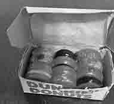
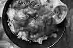

I bought two packs of the trader joes prosciutto on Sunday.you know that white bit of the prosciutto
the fatty bit around the top edge
the bit that creates a web around the red bit
your head feels like a warm tv static
the fluorescent bulb of the kitchen counter light
it's beeping
beating
with the tv static
the white part of the prosciutto
feels greasy between your back teeth.
your teeth sink into it
even though it’s a thin slice
like when you put a lighter up to styrofoam.
the flesh is creamy.
buttery and velvety and like a frosting
and deeply savory
I left the pack of prosciutto in the fridge uncovered for too long
I tried stacking a tub of guac on top of the torn packaging
but some of the edges are crunchy from the cold.
those high-end restaurants
sometimes have a little-crispy-tuile thing made of prosciutto.
and then you ordered donuts
from Dunkinsyou ordered:
3 frosted pumpkin donuts
2 Boston cream
and 1 with the strawberry frosting and sprinkles
I went down to pick it up
the marble of the elevator was pulsing.
I said ‘thank you’ and ‘have a good night’
I sat down in the tv static and there were 2 vanilla frosting with sprinkles, 1 chocolate frosting with sprinkles, 1 jelly, 1 glazed and 1 chocolate glazed
there were no frosted pumpkins.
after that I made myself an omelet
I washed the pan the morning after.
and then I reheated Indian food
and then I had chips with buffalo dip and kit kat flavored ice cream after.
I can’t put my retainers in
picture of retainers
closeup image of prosciutto 1
closeup image of prosciutto 2
closeup image of prosciutto 3

a box of dunkin donuts
picture of an omelette

a picture of curry
closeup of buffalo dip
picture of a tub of kitkat icecream